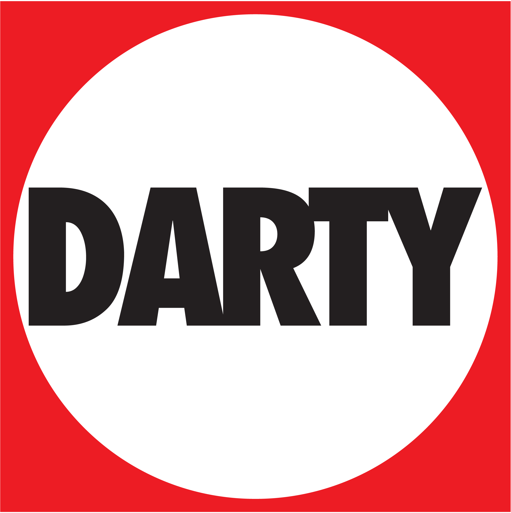
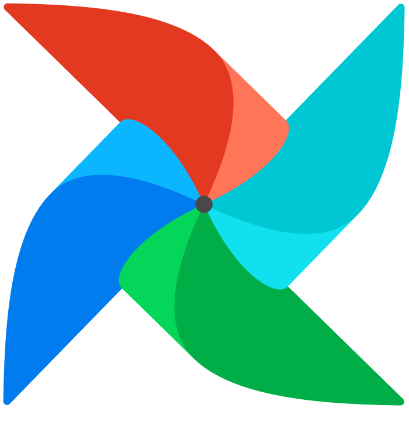
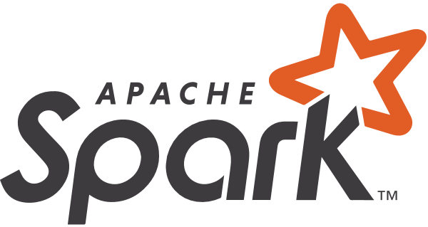
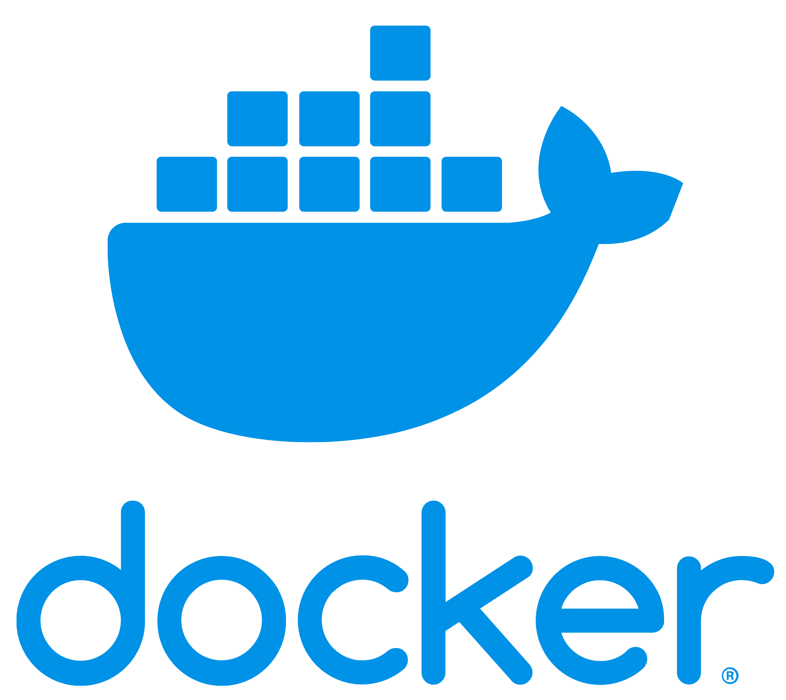
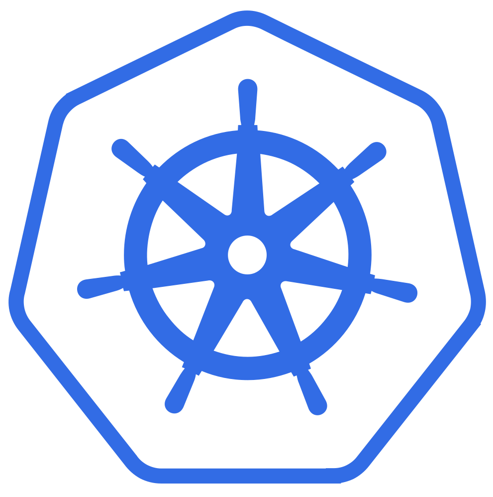

Data Dashboard CV
Candidate pour un stage de fin d’études (Mars–Septembre 2026) en Data Engineering & Data Science.
🎯 Recherche stage de fin d’études
Timeline
Évolution du profil professionel
Logs d'événements
Nov. 2024 – Avr. 2025
Stage M1 · Data Management — CREDOC
Centralisation et structuration des données d’enquêtes, création d’une
plateforme interne avec Streamlit pour mettre à disposition les données
(navigation, recherche, exports) et scripts Python d’automatisation
du nettoyage et traitement des données.
Data Lake
Python
Streamlit · Dash · PowerBI
Machine learning
Août 2023 - Décembre 2023
Semestre à l'étranger L3 - ESSCA Budapest

Immersion linguistique et culturelle
Décembre 2022
Stage commercial L2 — Darty

Conseil client, mise en rayon et suivi des ventes, arrangement des rayons selon les périodes.
Période de rush (Black Friday, Noêl, Jour de l'An).
Vente
Relation client
Gestion de la pression
Juin 2022
Stage d’exécution L1 — Crédit Mutuel
Gestion de l’accueil, des demandes clients, du courrier et des archives.
Première immersion dans le monde bancaire et le contact client.
Relation client
Autonomie
Depuis 2021
EFREI Paris — Majeure Data Engineering

Deux ans de classe préparatoire intégrée.
Premier semestre de 3ème année à l'étranger.
Deux ans de cours spécialisés en Data Engineering.
Premier semestre de 3ème année à l'étranger.
Deux ans de cours spécialisés en Data Engineering.
Machine Learning
Python · C · Linux · Java · Git
HTML · CSS · Javascript
SQL · NoSQL
API · Web Services
Cloud Computing
Communication · Philosophie · Management · Marketing
Projets académiques
Mise en pratique data / ML / IoT / Web
EFREI Paris
CocktailApp
iOS · SwiftUI · API
Développement d’une application iOS en SwiftUI permettant d’explorer des cocktails
via une API publique. Implémentation d’une architecture MVVM, de la navigation
moderne avec NavigationStack, de filtres dynamiques et d’un système de favoris
persistants.
Projet ML in Production
MLOps · NLP
Développement d’une application web complète (frontend React + backend FastAPI)
embarquant un modèle NLP de classification des sentiments. Mise en place
d’une pipeline MLOps avec CI/CD, MLflow, DVC et déploiement Docker sur le cloud.
BOAT
Computer Vision · Sécurité
Création d’une webapp permettant aux propriétaires de bateaux de détecter les vols
et d’être notifiés en temps réel à partir d’images issues de caméras portuaires,
en utilisant YOLO pour la détection visuelle.
Spotihub
Recommandation musicale · API • Web App
Développement d’une web-app connectée à l’API Spotify permettant d’analyser les habitudes
d’écoute des utilisateurs, d’identifier artistes/titres favoris, et de générer des playlists
personnalisées selon l’humeur ou la tendance musicale.
Interface responsive produite en Webflow (low-code) et intégration JSON via l’API Spotify. Déploiement sur Netlify
Kitty Tracker
IoT · Vue
Conception d’un boîtier accroché à un harnais pour chats, permettant aux
propriétaires de suivre en direct les déplacements de leur animal via
une application dédiée.
Service civique & associations
Engagement terrain & responsabilités
VOLONTARIAT
Service civique — Quarks Football (91)
Oct. 2024 –> Juil. 2025
Implication dans le développement du club de football américain, soutien
à l’organisation des événements et à la vie de l’association sportive.
Plus précisément :
- Création et maintenance du site web (WordPress) -> 🌐 Voir le site
- Prise de photos durant les matchs et entraînements
- Tenue du compte Instagram de la section Flag Football -> 📱 Voir la page
- Encaissements / service à la buvette
Bénévolat — Hopeland : refuge pour chiens (Thessaloniki, Grèce)
Sept. 2025
4 semaines - Prise en charge des chiens (nourrissage / soins / sorties / surveillance ...) et aide au quotidien dans le refuge (nettoyages quotidiens complets de la maison et des terrains).
Bénévolat — Secours Populaire (91)
2019 –> 2021
Aide à la collecte, tri, rangement et distribution des denrées alimentaires aux plus démunis.
Associations étudiantes (EFREI)
Durant ma scolarité
- Vice-Présidente de Make Me Up (association de maquillage)
- Trésorière de Millésime (oenologie) & Efrei Chefs (cuisine)
- Responsable Design & Communication pour le BDE, Efrei Chefs et Millésime
Soft skills
Compétences comportementales évaluées
Auto-évaluation
Adaptabilité
★★★★☆
Communication
★★★★☆
Curiosité intellectuelle
★★★★★
Empathie
★★★★★
Gestion de la pression
★★★★☆
Motivation
★★★★★
Ponctualité
★★★★★
Rédaction
★★★★★
Rigueur
★★★★★
Certifications
Compétences vérifiées
2025
Curriculum Vitae
Version PDF téléchargeable
PDF
Retrouvez une version imprimable de mon CV (PDF).
Mise en page pour candidatures classiques.
Cloud Explorer
Services Cloud étudiés
Cloud & MLOps
☁️ CLOUD PLATFORMS (services)

Azure AI Services

Azure Blob Storage

Azure ML Studio

BigQuery

AWS S3
⚙️ DATA ENGINEERING & PIPELINES CLOUD

Apache Airflow
Apache Kafka

Apache Spark

MLflow

Docker

GitHub Actions (CI/CD → cloud)

Kubernetes
Contact & next step
Data Engineering & Data Science · Stage de fin d’études
Disponible Mars –> Sept. 2026
Intéressé·e par mon profil pour un stage de fin d’études en Data Engineering / Data Science ? Je serais ravie d’échanger sur vos besoins, vos enjeux data et la manière dont je peux y contribuer.